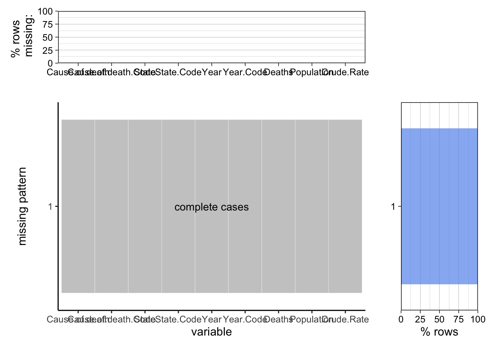
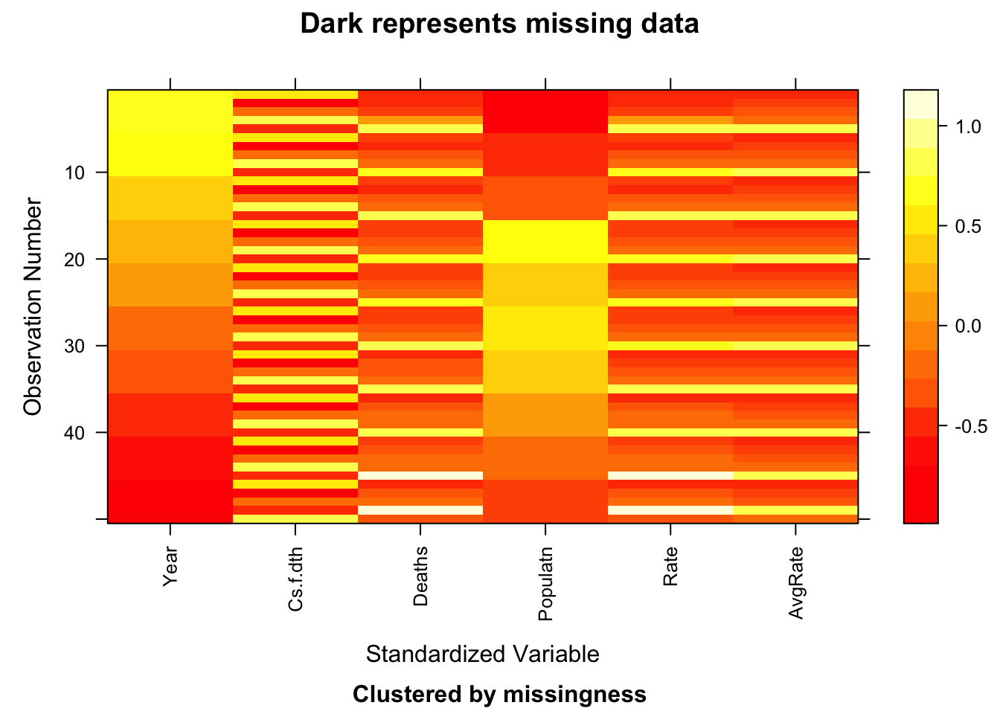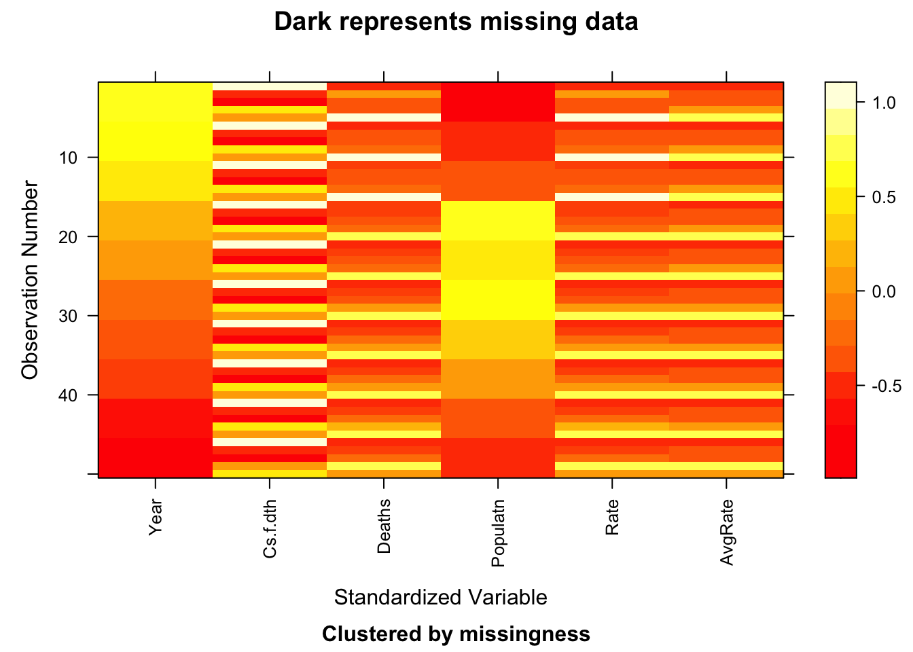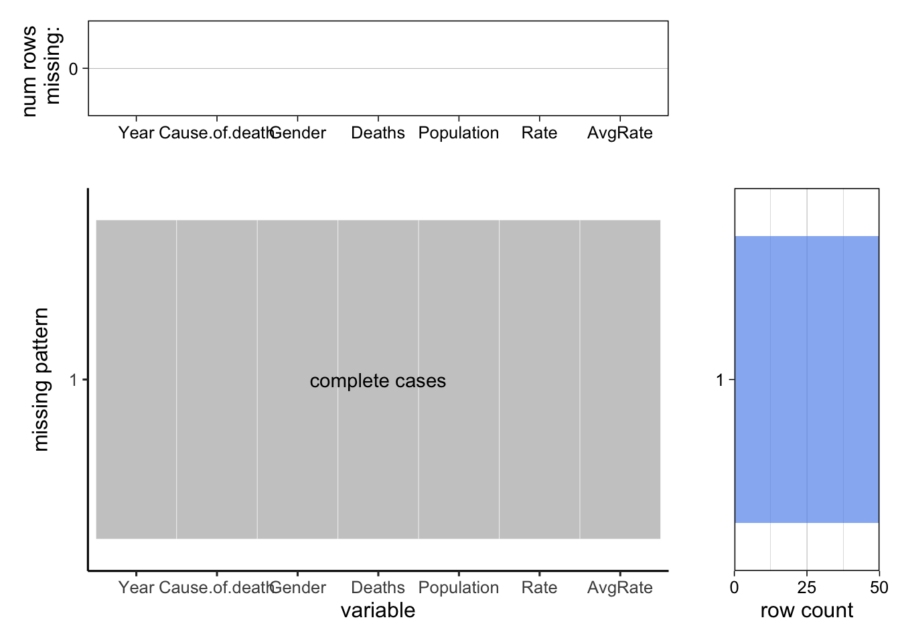
## NOTE: The following pairs of variables appear to have the same missingness pattern. ## Please verify whether they are in fact logically distinct variables. ## [,1] [,2] ## [1,] "Population" "Crude.Rate"
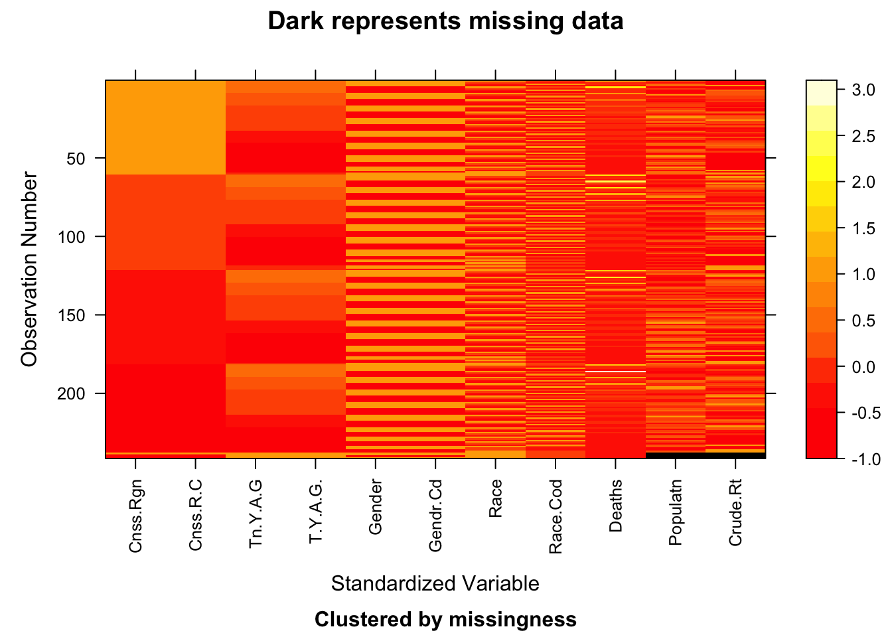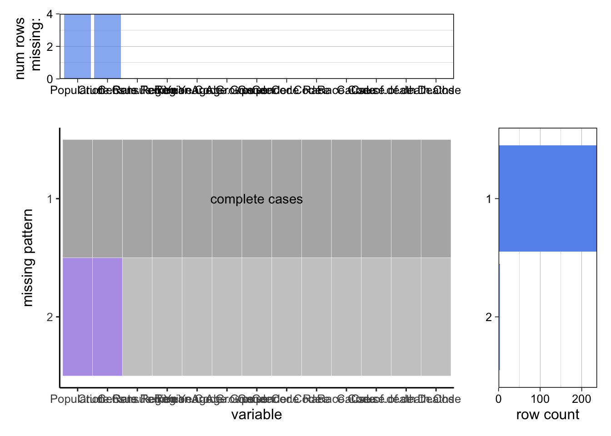
 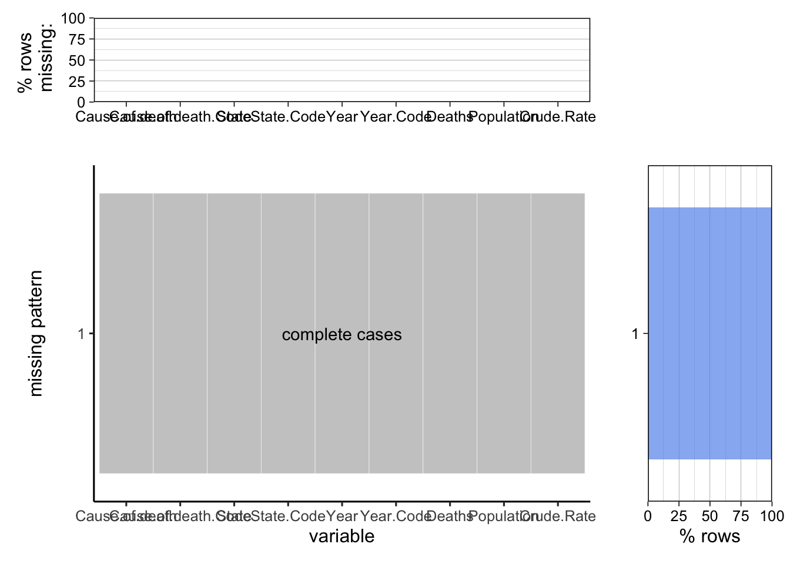
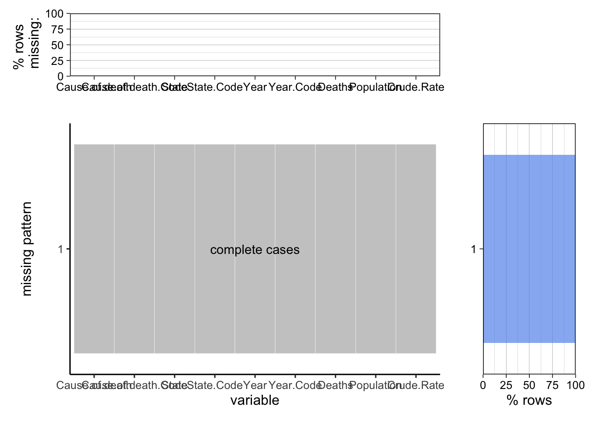 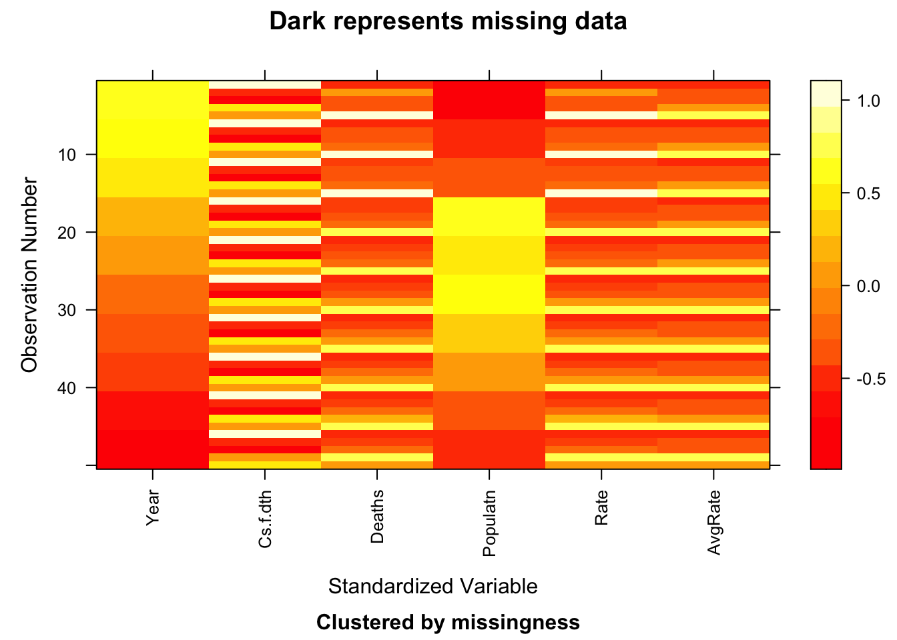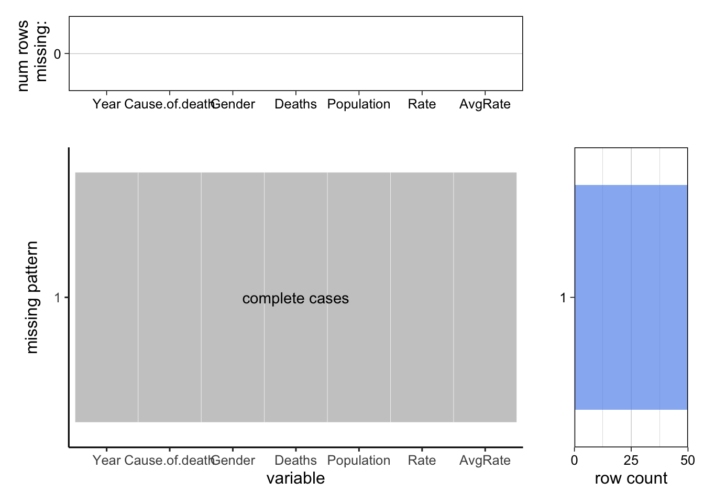
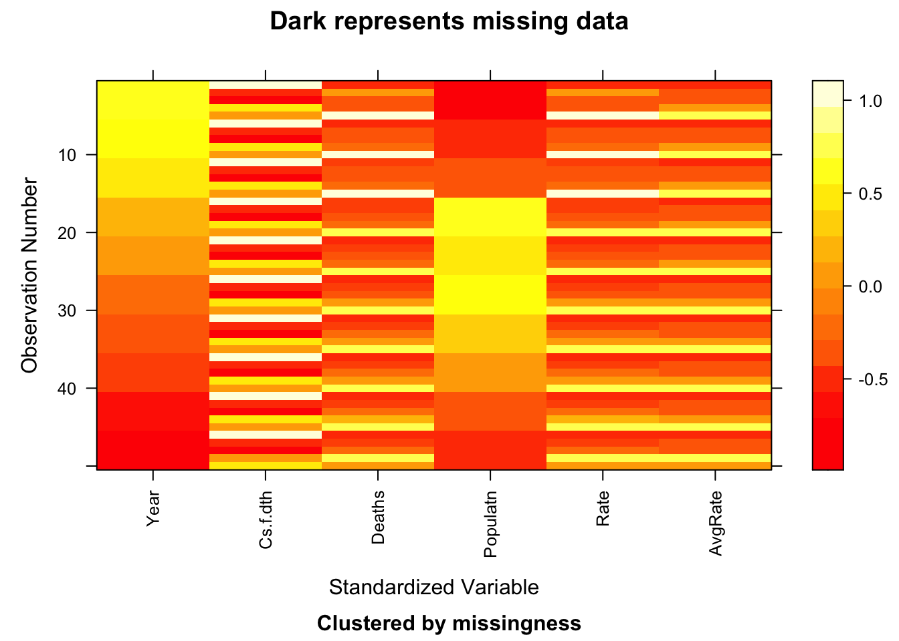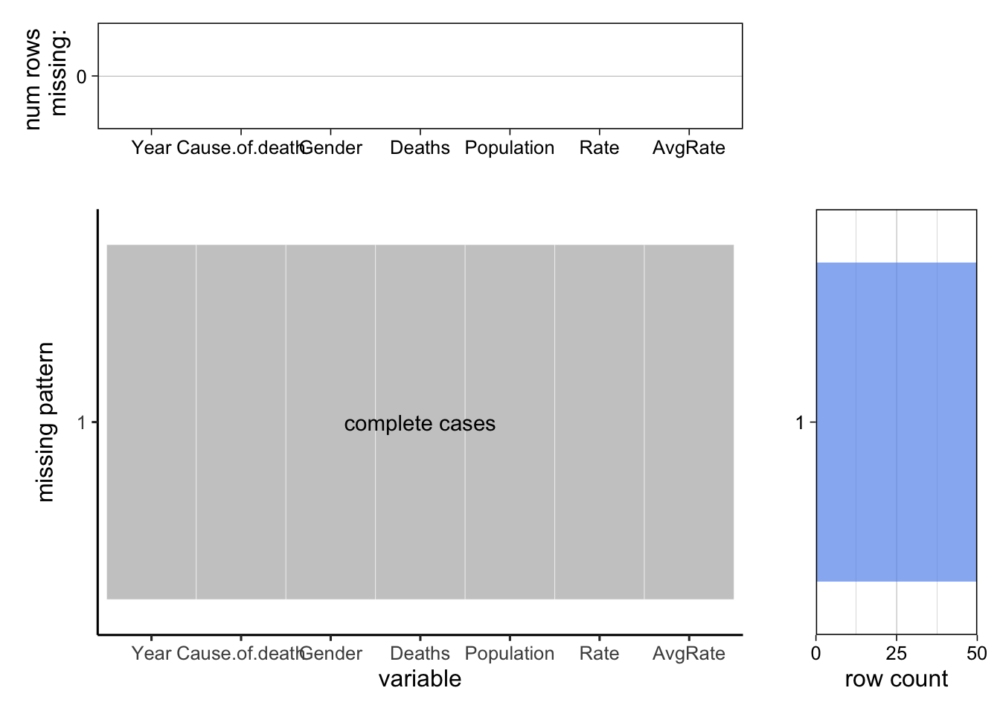